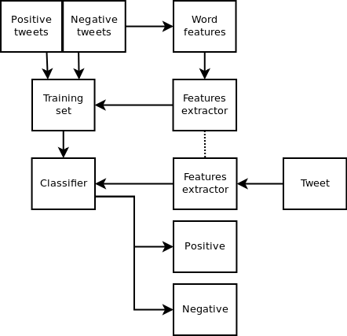

基于机器学习的情感分析¶


Emotion¶
Different types of emotion: anger, disgust, fear, joy, sadness, and surprise. The classification can be performed using different algorithms: e.g., naive Bayes classifier trained on Carlo Strapparava and Alessandro Valitutti’s emotions lexicon.
Polarity¶
To classify some text as positive or negative. In this case, the classification can be done by using a naive Bayes algorithm trained on Janyce Wiebe’s subjectivity lexicon.

Sentiment Analysis with Sklearn¶
import numpy as np
import pandas as pd
from sklearn.feature_extraction.text import TfidfVectorizer
pos_tweets = [('I love this car', 'positive'),
('This view is amazing', 'positive'),
('I feel great this morning', 'positive'),
('I am so excited about the concert', 'positive'),
('He is my best friend', 'positive')]
neg_tweets = [('I do not like this car', 'negative'),
('This view is horrible', 'negative'),
('I feel tired this morning', 'negative'),
('I am not looking forward to the concert', 'negative'),
('He is my enemy', 'negative')]
test_tweets = [
('feel happy this morning', 'positive'),
('larry is my friend', 'positive'),
('I do not like that man', 'negative'),
('house is not great', 'negative'),
('your song is annoying', 'negative')]
dat = []
for i in pos_tweets+neg_tweets+test_tweets:
dat.append(i)
X = np.array(dat).T[0]
y = np.array(dat).T[1]
TfidfVectorizer?
vec = TfidfVectorizer(stop_words='english', ngram_range = (1, 1), lowercase = True)
X_vec = vec.fit_transform(X)
Xtrain = X_vec[:10]
Xtest = X_vec[10:]
ytrain = y[:10]
ytest= y[10:]
pd.DataFrame(X_vec.toarray(), columns=vec.get_feature_names())
| amazing | annoying | best | car | concert | enemy | excited | feel | forward | friend | ... | house | larry | like | looking | love | man | morning | song | tired | view | |
|---|---|---|---|---|---|---|---|---|---|---|---|---|---|---|---|---|---|---|---|---|---|
| 0 | 0.000000 | 0.000000 | 0.000000 | 0.655648 | 0.000000 | 0.0 | 0.000000 | 0.000000 | 0.000000 | 0.000000 | ... | 0.000000 | 0.000000 | 0.000000 | 0.000000 | 0.755067 | 0.000000 | 0.000000 | 0.000000 | 0.00000 | 0.000000 |
| 1 | 0.755067 | 0.000000 | 0.000000 | 0.000000 | 0.000000 | 0.0 | 0.000000 | 0.000000 | 0.000000 | 0.000000 | ... | 0.000000 | 0.000000 | 0.000000 | 0.000000 | 0.000000 | 0.000000 | 0.000000 | 0.000000 | 0.00000 | 0.655648 |
| 2 | 0.000000 | 0.000000 | 0.000000 | 0.000000 | 0.000000 | 0.0 | 0.000000 | 0.554219 | 0.000000 | 0.000000 | ... | 0.000000 | 0.000000 | 0.000000 | 0.000000 | 0.000000 | 0.000000 | 0.554219 | 0.000000 | 0.00000 | 0.000000 |
| 3 | 0.000000 | 0.000000 | 0.000000 | 0.000000 | 0.655648 | 0.0 | 0.755067 | 0.000000 | 0.000000 | 0.000000 | ... | 0.000000 | 0.000000 | 0.000000 | 0.000000 | 0.000000 | 0.000000 | 0.000000 | 0.000000 | 0.00000 | 0.000000 |
| 4 | 0.000000 | 0.000000 | 0.755067 | 0.000000 | 0.000000 | 0.0 | 0.000000 | 0.000000 | 0.000000 | 0.655648 | ... | 0.000000 | 0.000000 | 0.000000 | 0.000000 | 0.000000 | 0.000000 | 0.000000 | 0.000000 | 0.00000 | 0.000000 |
| 5 | 0.000000 | 0.000000 | 0.000000 | 0.707107 | 0.000000 | 0.0 | 0.000000 | 0.000000 | 0.000000 | 0.000000 | ... | 0.000000 | 0.000000 | 0.707107 | 0.000000 | 0.000000 | 0.000000 | 0.000000 | 0.000000 | 0.00000 | 0.000000 |
| 6 | 0.000000 | 0.000000 | 0.000000 | 0.000000 | 0.000000 | 0.0 | 0.000000 | 0.000000 | 0.000000 | 0.000000 | ... | 0.000000 | 0.000000 | 0.000000 | 0.000000 | 0.000000 | 0.000000 | 0.000000 | 0.000000 | 0.00000 | 0.655648 |
| 7 | 0.000000 | 0.000000 | 0.000000 | 0.000000 | 0.000000 | 0.0 | 0.000000 | 0.522329 | 0.000000 | 0.000000 | ... | 0.000000 | 0.000000 | 0.000000 | 0.000000 | 0.000000 | 0.000000 | 0.522329 | 0.000000 | 0.67405 | 0.000000 |
| 8 | 0.000000 | 0.000000 | 0.000000 | 0.000000 | 0.523243 | 0.0 | 0.000000 | 0.000000 | 0.602585 | 0.000000 | ... | 0.000000 | 0.000000 | 0.000000 | 0.602585 | 0.000000 | 0.000000 | 0.000000 | 0.000000 | 0.00000 | 0.000000 |
| 9 | 0.000000 | 0.000000 | 0.000000 | 0.000000 | 0.000000 | 1.0 | 0.000000 | 0.000000 | 0.000000 | 0.000000 | ... | 0.000000 | 0.000000 | 0.000000 | 0.000000 | 0.000000 | 0.000000 | 0.000000 | 0.000000 | 0.00000 | 0.000000 |
| 10 | 0.000000 | 0.000000 | 0.000000 | 0.000000 | 0.000000 | 0.0 | 0.000000 | 0.522329 | 0.000000 | 0.000000 | ... | 0.000000 | 0.000000 | 0.000000 | 0.000000 | 0.000000 | 0.000000 | 0.522329 | 0.000000 | 0.00000 | 0.000000 |
| 11 | 0.000000 | 0.000000 | 0.000000 | 0.000000 | 0.000000 | 0.0 | 0.000000 | 0.000000 | 0.000000 | 0.655648 | ... | 0.000000 | 0.755067 | 0.000000 | 0.000000 | 0.000000 | 0.000000 | 0.000000 | 0.000000 | 0.00000 | 0.000000 |
| 12 | 0.000000 | 0.000000 | 0.000000 | 0.000000 | 0.000000 | 0.0 | 0.000000 | 0.000000 | 0.000000 | 0.000000 | ... | 0.000000 | 0.000000 | 0.655648 | 0.000000 | 0.000000 | 0.755067 | 0.000000 | 0.000000 | 0.00000 | 0.000000 |
| 13 | 0.000000 | 0.000000 | 0.000000 | 0.000000 | 0.000000 | 0.0 | 0.000000 | 0.000000 | 0.000000 | 0.000000 | ... | 0.755067 | 0.000000 | 0.000000 | 0.000000 | 0.000000 | 0.000000 | 0.000000 | 0.000000 | 0.00000 | 0.000000 |
| 14 | 0.000000 | 0.707107 | 0.000000 | 0.000000 | 0.000000 | 0.0 | 0.000000 | 0.000000 | 0.000000 | 0.000000 | ... | 0.000000 | 0.000000 | 0.000000 | 0.000000 | 0.000000 | 0.000000 | 0.000000 | 0.707107 | 0.00000 | 0.000000 |
15 rows × 23 columns
from sklearn.naive_bayes import GaussianNB # 1. choose model class
model = GaussianNB() # 2. instantiate model
model.fit(Xtrain.toarray(), ytrain) # 3. fit model to data
y_model = model.predict(Xtest.toarray()) # 4. predict on new data
y_model
array(['positive', 'positive', 'negative', 'positive', 'negative'],
dtype='<U8')
from sklearn.metrics import accuracy_score
accuracy_score(ytest, y_model)
0.8
from sklearn.svm import SVC
svc=SVC(kernel='rbf', gamma=1) # 超级参数
svc.fit(Xtrain.toarray(), ytrain) # 3. fit model to data
y_model=svc.predict(Xtest.toarray())
accuracy_score(ytest, y_model)
0.8
y_model
array(['positive', 'positive', 'negative', 'positive', 'negative'],
dtype='<U39')
y_model=svc.predict(Xtest.toarray())
# Don’t be too positive, let’s try another example:
vocabulary = vec.get_feature_names()
def classify_sentiment(str_list, model, vocabulary):
# str_list = ['a str']
vec_pred = TfidfVectorizer(stop_words='english', ngram_range = (1, 1), lowercase = True, vocabulary = vocabulary)
return model.predict(vec_pred.fit_transform(str_list).toarray())
classify_sentiment(['Your song is annoying','larry is horrible'], model, vocabulary)
array(['negative', 'negative'], dtype='<U8')
classify_sentiment(['I do not like larry', 'larry is my friend'], svc, vocabulary)
array(['negative', 'positive'], dtype='<U39')
作业
使用另外一种sklearn的分类器来对tweet_negative2进行情感分析
使用https://github.com/victorneo/Twitter-Sentimental-Analysis 所提供的推特数据进行情感分析，可以使用其代码 https://github.com/victorneo/Twitter-Sentimental-Analysis/blob/master/classification.py
Sentiment Analysis of IMDb movie review Dataset Using Sklearn https://nbviewer.jupyter.org/github/rasbt/python-machine-learning-book/blob/master/code/ch08/ch08.ipynb
PaddlePaddle¶

http://paddlepaddle.org
https://github.com/PaddlePaddle/book/tree/develop/06.understand_sentiment
Turicreate¶
https://github.com/apple/turicreate

https://apple.github.io/turicreate/docs/userguide/text_classifier/
https://www.kaggle.com/prakharrathi25/updated-turicreate-sentiment-analysis

Creating Sentiment Classifier with Turicreate¶
In this notebook, I will explain how to develop sentiment analysis classifiers that are based on a bag-of-words model. Then, I will demonstrate how these classifiers can be utilized to solve Kaggle’s “When Bag of Words Meets Bags of Popcorn” challenge.
Using GraphLab Turicreate it is very easy and straight foward to create a sentiment classifier based on bag-of-words model. Given a dataset stored as a CSV file, you can construct your sentiment classifier using the following code:
# toy code, do not run it
import turicreate as tc
train_data = tc.SFrame.read_csv(traindata_path,header=True,
delimiter='\t',quote_char='"',
column_type_hints = {'id':str,
'sentiment' : int,
'review':str } )
train_data['1grams features'] = tc.text_analytics.count_ngrams(
train_data['review'],1)
train_data['2grams features'] = tc.text_analytics.count_ngrams(
train_data['review'],2)
cls = tc.classifier.create(train_data, target='sentiment',
features=['1grams features',
'2grams features'])
In the rest of this notebook, we will explain this code recipe in details, by demonstrating how this recipe can used to create IMDB movie reviews sentiment classifier.
Before we begin constructing the classifiers, we need to import some Python libraries: turicreate (tc), and IPython display utilities.
import turicreate as tc
from IPython.display import display
from IPython.display import Image
IMDB movies reviews Dataset¶
Bag of Words Meets Bags of Popcorn
Throughout this notebook, I will use Kaggle’s IMDB movies reviews datasets that is available to download from the following link: https://www.kaggle.com/c/word2vec-nlp-tutorial/data. I downloaded labeledTrainData.tsv and testData.tsv files, and unzipped them to the following local files.
DeepLearningMovies¶
Kaggle’s competition for using Google’s word2vec package for sentiment analysis
https://github.com/wendykan/DeepLearningMovies
traindata_path = "/Users/datalab/bigdata/cjc/kaggle_popcorn_data/labeledTrainData.tsv"
testdata_path = "/Users/datalab/bigdata/cjc/kaggle_popcorn_data/testData.tsv"
Loading Data¶
We will load the data with IMDB movie reviews to an SFrame using SFrame.read_csv function.
movies_reviews_data = tc.SFrame.read_csv(traindata_path,header=True,
delimiter='\t',quote_char='"',
column_type_hints = {'id':str,
'sentiment' : str,
'review':str } )
Finished parsing file /Users/datalab/bigdata/cjc/kaggle_popcorn_data/labeledTrainData.tsv
Parsing completed. Parsed 100 lines in 0.318532 secs.
Finished parsing file /Users/datalab/bigdata/cjc/kaggle_popcorn_data/labeledTrainData.tsv
Parsing completed. Parsed 25000 lines in 0.499892 secs.
By using the SFrame show function, we can visualize the data and notice that the train dataset consists of 12,500 positive and 12,500 negative, and overall 24,932 unique reviews.
movies_reviews_data
| id | sentiment | review |
|---|---|---|
| 5814_8 | 1 | With all this stuff going down at the moment with ... |
| 2381_9 | 1 | "The Classic War of the Worlds" by Timothy Hines ... |
| 7759_3 | 0 | The film starts with a manager (Nicholas Bell) ... |
| 3630_4 | 0 | It must be assumed that those who praised this ... |
| 9495_8 | 1 | Superbly trashy and wondrously unpretentious ... |
| 8196_8 | 1 | I dont know why people think this is such a bad ... |
| 7166_2 | 0 | This movie could have been very good, but c ... |
| 10633_1 | 0 | I watched this video at a friend's house. I'm glad ... |
| 319_1 | 0 | A friend of mine bought this film for £1, and ... |
| 8713_10 | 1 | <br /><br />This movie is full of references. Like ... |
Note: Only the head of the SFrame is printed.
You can use print_rows(num_rows=m, num_columns=n) to print more rows and columns.
Constructing Bag-of-Words Classifier¶
One of the common techniques to perform document classification (and reviews classification) is using Bag-of-Words model, in which the frequency of each word in the document is used as a feature for training a classifier. GraphLab’s text analytics toolkit makes it easy to calculate the frequency of each word in each review. Namely, by using the count_ngrams function with n=1, we can calculate the frequency of each word in each review. By running the following command:
movies_reviews_data['1grams features'] = tc.text_analytics.count_ngrams(movies_reviews_data ['review'],1)
By running the last command, we created a new column in movies_reviews_data SFrame object. In this column each value is a dictionary object, where each dictionary’s keys are the different words which appear in the corresponding review, and the dictionary’s values are the frequency of each word. We can view the values of this new column using the following command.
movies_reviews_data#[['review','1grams features']]
| id | sentiment | review | 1grams features |
|---|---|---|---|
| 5814_8 | 1 | With all this stuff going down at the moment with ... |
{'just': 3, 'sickest': 1, 'smooth': 1, 'this': 11, ... |
| 2381_9 | 1 | "The Classic War of the Worlds" by Timothy Hines ... |
{'year': 1, 'others': 1, 'those': 2, 'this': 1, ... |
| 7759_3 | 0 | The film starts with a manager (Nicholas Bell) ... |
{'hair': 1, 'bound': 1, 'this': 1, 'when': 2, ... |
| 3630_4 | 0 | It must be assumed that those who praised this ... |
{'crocuses': 1, 'that': 7, 'batonzilla': 1, ... |
| 9495_8 | 1 | Superbly trashy and wondrously unpretentious ... |
{'unshaven': 1, 'just': 1, 'in': 5, 'when': 2, ... |
| 8196_8 | 1 | I dont know why people think this is such a bad ... |
{'harry': 3, 'this': 4, 'of': 2, 'hurt': 1, ' ... |
| 7166_2 | 0 | This movie could have been very good, but c ... |
{'acting': 1, 'background': 1, 'just': ... |
| 10633_1 | 0 | I watched this video at a friend's house. I'm glad ... |
{'photography': 1, 'others': 1, 'zapruder': ... |
| 319_1 | 0 | A friend of mine bought this film for £1, and ... |
{'just': 1, 'this': 2, 'when': 1, 'as': 5, 's': ... |
| 8713_10 | 1 | <br /><br />This movie is full of references. Like ... |
{'peter': 1, 'ii': 1, 'full': 1, 'others': 1, ... |
Note: Only the head of the SFrame is printed.
You can use print_rows(num_rows=m, num_columns=n) to print more rows and columns.
We are now ready to construct and evaluate the movie reviews sentiment classifier using the calculated above features. But first, to be able to perform a quick evaluation of the constructed classifier, we need to create labeled train and test datasets. We will create train and test datasets by randomly splitting the train dataset into two parts. The first part will contain 80% of the labeled train dataset and will be used as the training dataset, while the second part will contain 20% of the labeled train dataset and will be used as the testing dataset. We will create these two dataset by using the following command:
train_set, test_set = movies_reviews_data.random_split(0.8, seed=5)
We are now ready to create a classifier using the following command:
model_1 = tc.classifier.create(train_set, target='sentiment', \
features=['1grams features'])
PROGRESS: Creating a validation set from 5 percent of training data. This may take a while.
You can set ``validation_set=None`` to disable validation tracking.
PROGRESS: The following methods are available for this type of problem.
PROGRESS: LogisticClassifier, SVMClassifier
PROGRESS: The returned model will be chosen according to validation accuracy.
Logistic regression:
--------------------------------------------------------
Number of examples : 19077
Number of classes : 2
Number of feature columns : 1
Number of unpacked features : 68246
Number of coefficients : 68247
Starting L-BFGS
--------------------------------------------------------
+-----------+----------+-----------+--------------+-------------------+---------------------+
| Iteration | Passes | Step size | Elapsed Time | Training Accuracy | Validation Accuracy |
+-----------+----------+-----------+--------------+-------------------+---------------------+
| 0 | 2 | 1.000000 | 1.111660 | 0.942182 | 0.860697 |
| 1 | 4 | 1.000000 | 1.253890 | 0.968444 | 0.865672 |
| 2 | 6 | 1.000000 | 1.390344 | 0.990040 | 0.897512 |
| 3 | 7 | 1.000000 | 1.474481 | 0.992923 | 0.899502 |
| 4 | 8 | 1.000000 | 1.563669 | 0.997379 | 0.891542 |
| 9 | 13 | 1.000000 | 2.052863 | 1.000000 | 0.867662 |
+-----------+----------+-----------+--------------+-------------------+---------------------+
SVM:
--------------------------------------------------------
Number of examples : 19077
Number of classes : 2
Number of feature columns : 1
Number of unpacked features : 68246
Number of coefficients : 68247
Starting L-BFGS
--------------------------------------------------------
+-----------+----------+-----------+--------------+-------------------+---------------------+
| Iteration | Passes | Step size | Elapsed Time | Training Accuracy | Validation Accuracy |
+-----------+----------+-----------+--------------+-------------------+---------------------+
| 0 | 2 | 1.000000 | 0.125585 | 0.942182 | 0.860697 |
| 1 | 4 | 1.000000 | 0.268260 | 0.973738 | 0.875622 |
| 2 | 5 | 1.000000 | 0.348993 | 0.989411 | 0.881592 |
| 3 | 6 | 1.000000 | 0.433099 | 0.992976 | 0.884577 |
| 4 | 7 | 1.000000 | 0.519594 | 0.996016 | 0.881592 |
| 9 | 12 | 1.000000 | 0.923521 | 0.999685 | 0.886567 |
+-----------+----------+-----------+--------------+-------------------+---------------------+
PROGRESS: Model selection based on validation accuracy:
PROGRESS: ---------------------------------------------
PROGRESS: LogisticClassifier : 0.8676616915422886
PROGRESS: SVMClassifier : 0.8865671641791045
PROGRESS: ---------------------------------------------
PROGRESS: Selecting SVMClassifier based on validation set performance.
We can evaluate the performence of the classifier by evaluating it on the test dataset
result1 = model_1.evaluate(test_set)
In order to get an easy view of the classifier’s prediction result, we define and use the following function
def print_statistics(result):
print( "*" * 30)
print( "Accuracy : ", result["accuracy"])
print( "Confusion Matrix: \n", result["confusion_matrix"])
print_statistics(result1)
******************************
Accuracy : 0.8710858072387149
Confusion Matrix:
+--------------+-----------------+-------+
| target_label | predicted_label | count |
+--------------+-----------------+-------+
| 0 | 1 | 374 |
| 1 | 0 | 260 |
| 1 | 1 | 2133 |
| 0 | 0 | 2151 |
+--------------+-----------------+-------+
[4 rows x 3 columns]
As can be seen in the results above, in just a few relatively straight foward lines of code, we have developed a sentiment classifier that has accuracy of about ~0.88. Next, we demonstrate how we can improve the classifier accuracy even more.
Improving The Classifier¶
One way to improve the movie reviews sentiment classifier is to extract more meaningful features from the reviews. One method to add additional features, which might be meaningful, is to calculate the frequency of every two consecutive words in each review. To calculate the frequency of each two consecutive words in each review, as before, we will use turicreate’s count_ngrams function only this time we will set n to be equal 2 (n=2) to create new column named ‘2grams features’.
movies_reviews_data['2grams features'] = tc.text_analytics.count_ngrams(movies_reviews_data['review'],2)
movies_reviews_data
| id | sentiment | review | 1grams features | 2grams features |
|---|---|---|---|---|
| 5814_8 | 1 | With all this stuff going down at the moment with ... |
{'just': 3, 'sickest': 1, 'smooth': 1, 'this': 11, ... |
{'alone a': 1, 'most people': 1, 'hope he' ... |
| 2381_9 | 1 | "The Classic War of the Worlds" by Timothy Hines ... |
{'year': 1, 'others': 1, 'those': 2, 'this': 1, ... |
{'slightest resemblance': 1, 'which is': 1, 'very ... |
| 7759_3 | 0 | The film starts with a manager (Nicholas Bell) ... |
{'hair': 1, 'bound': 1, 'this': 1, 'when': 2, ... |
{'quite boring': 1, 'packs a': 1, 'small ... |
| 3630_4 | 0 | It must be assumed that those who praised this ... |
{'crocuses': 1, 'that': 7, 'batonzilla': 1, ... |
{'but i': 1, 'is represented': 1, 'opera ... |
| 9495_8 | 1 | Superbly trashy and wondrously unpretentious ... |
{'unshaven': 1, 'just': 1, 'in': 5, 'when': 2, ... |
{'unpretentious 80': 1, 'sleazy black': 1, 'd ... |
| 8196_8 | 1 | I dont know why people think this is such a bad ... |
{'harry': 3, 'this': 4, 'of': 2, 'hurt': 1, ' ... |
{'like that': 1, 'see this': 1, 'is such': 1, ... |
| 7166_2 | 0 | This movie could have been very good, but c ... |
{'acting': 1, 'background': 1, 'just': ... |
{'linked to': 1, 'way short': 1, 'good but' ... |
| 10633_1 | 0 | I watched this video at a friend's house. I'm glad ... |
{'photography': 1, 'others': 1, 'zapruder': ... |
{'curiously ends': 1, 'several clips': 1, ... |
| 319_1 | 0 | A friend of mine bought this film for £1, and ... |
{'just': 1, 'this': 2, 'when': 1, 'as': 5, 's': ... |
{'bob thornton': 1, 'in the': 1, 'taking a': 1, ... |
| 8713_10 | 1 | <br /><br />This movie is full of references. Like ... |
{'peter': 1, 'ii': 1, 'full': 1, 'others': 1, ... |
{'in the': 1, 'is a': 1, 'lorre this': 1, 'much ... |
Note: Only the head of the SFrame is printed.
You can use print_rows(num_rows=m, num_columns=n) to print more rows and columns.
As before, we will construct and evaluate a movie reviews sentiment classifier. However, this time we will use both the ‘1grams features’ and the ‘2grams features’ features
train_set, test_set = movies_reviews_data.random_split(0.8, seed=5)
model_2 = tc.classifier.create(train_set, target='sentiment', features=['1grams features','2grams features'])
result2 = model_2.evaluate(test_set)
PROGRESS: Creating a validation set from 5 percent of training data. This may take a while.
You can set ``validation_set=None`` to disable validation tracking.
PROGRESS: The following methods are available for this type of problem.
PROGRESS: LogisticClassifier, SVMClassifier
PROGRESS: The returned model will be chosen according to validation accuracy.
Logistic regression:
--------------------------------------------------------
Number of examples : 19077
Number of classes : 2
Number of feature columns : 2
Number of unpacked features : 1206694
Number of coefficients : 1206695
Starting L-BFGS
--------------------------------------------------------
+-----------+----------+-----------+--------------+-------------------+---------------------+
| Iteration | Passes | Step size | Elapsed Time | Training Accuracy | Validation Accuracy |
+-----------+----------+-----------+--------------+-------------------+---------------------+
| 0 | 3 | 0.500000 | 0.884358 | 0.999266 | 0.866667 |
| 1 | 5 | 0.500000 | 1.542838 | 0.999948 | 0.866667 |
| 2 | 6 | 0.625000 | 1.909261 | 1.000000 | 0.865672 |
| 3 | 8 | 0.625000 | 2.436618 | 1.000000 | 0.864677 |
| 4 | 10 | 0.625000 | 2.971373 | 1.000000 | 0.863682 |
| 9 | 18 | 0.976563 | 5.228981 | 1.000000 | 0.862687 |
+-----------+----------+-----------+--------------+-------------------+---------------------+
SVM:
--------------------------------------------------------
Number of examples : 19077
Number of classes : 2
Number of feature columns : 2
Number of unpacked features : 1206694
Number of coefficients : 1206695
Starting L-BFGS
--------------------------------------------------------
+-----------+----------+-----------+--------------+-------------------+---------------------+
| Iteration | Passes | Step size | Elapsed Time | Training Accuracy | Validation Accuracy |
+-----------+----------+-----------+--------------+-------------------+---------------------+
| 0 | 2 | 1.000000 | 0.710178 | 0.999266 | 0.866667 |
| 1 | 4 | 1.000000 | 1.227603 | 1.000000 | 0.865672 |
| 2 | 5 | 1.000000 | 1.524246 | 1.000000 | 0.865672 |
| 3 | 6 | 1.000000 | 1.824261 | 1.000000 | 0.865672 |
| 4 | 13 | 0.001263 | 3.080125 | 1.000000 | 0.865672 |
| 9 | 26 | 0.262737 | 6.006328 | 1.000000 | 0.865672 |
+-----------+----------+-----------+--------------+-------------------+---------------------+
PROGRESS: Model selection based on validation accuracy:
PROGRESS: ---------------------------------------------
PROGRESS: LogisticClassifier : 0.8626865671641791
PROGRESS: SVMClassifier : 0.8656716417910447
PROGRESS: ---------------------------------------------
PROGRESS: Selecting SVMClassifier based on validation set performance.
print_statistics(result2)
******************************
Accuracy : 0.8816592110614071
Confusion Matrix:
+--------------+-----------------+-------+
| target_label | predicted_label | count |
+--------------+-----------------+-------+
| 0 | 1 | 343 |
| 1 | 0 | 239 |
| 1 | 1 | 2154 |
| 0 | 0 | 2182 |
+--------------+-----------------+-------+
[4 rows x 3 columns]
Indeed, the new constructed classifier seems to be more accurate with an accuracy of about ~0.9.
Unlabeled Test File¶
To test how well the presented method works, we will use all the 25,000 labeled IMDB movie reviews in the train dataset to construct a classifier. Afterwards, we will utilize the constructed classifier to predict sentiment for each review in the unlabeled dataset. Lastly, we will create a submission file according to Kaggle’s guidelines and submit it.
traindata_path = "/Users/datalab/bigdata/cjc/kaggle_popcorn_data/labeledTrainData.tsv"
testdata_path = "/Users/datalab/bigdata/cjc/kaggle_popcorn_data/testData.tsv"
#creating classifier using all 25,000 reviews
train_data = tc.SFrame.read_csv(traindata_path,header=True, delimiter='\t',quote_char='"',
column_type_hints = {'id':str, 'sentiment' : int, 'review':str } )
train_data['1grams features'] = tc.text_analytics.count_ngrams(train_data['review'],1)
train_data['2grams features'] = tc.text_analytics.count_ngrams(train_data['review'],2)
cls = tc.classifier.create(train_data, target='sentiment', features=['1grams features','2grams features'])
#creating the test dataset
test_data = tc.SFrame.read_csv(testdata_path,header=True, delimiter='\t',quote_char='"',
column_type_hints = {'id':str, 'review':str } )
test_data['1grams features'] = tc.text_analytics.count_ngrams(test_data['review'],1)
test_data['2grams features'] = tc.text_analytics.count_ngrams(test_data['review'],2)
#predicting the sentiment of each review in the test dataset
test_data['sentiment'] = cls.classify(test_data)['class'].astype(int)
#saving the prediction to a CSV for submission
test_data[['id','sentiment']].save("/Users/datalab/bigdata/cjc/kaggle_popcorn_data/predictions.csv", format="csv")
Finished parsing file /Users/datalab/bigdata/cjc/kaggle_popcorn_data/labeledTrainData.tsv
Parsing completed. Parsed 100 lines in 0.282738 secs.
Finished parsing file /Users/datalab/bigdata/cjc/kaggle_popcorn_data/labeledTrainData.tsv
Parsing completed. Parsed 25000 lines in 0.507212 secs.
PROGRESS: Creating a validation set from 5 percent of training data. This may take a while.
You can set ``validation_set=None`` to disable validation tracking.
PROGRESS: The following methods are available for this type of problem.
PROGRESS: LogisticClassifier, SVMClassifier
PROGRESS: The returned model will be chosen according to validation accuracy.
Logistic regression:
--------------------------------------------------------
Number of examples : 23750
Number of classes : 2
Number of feature columns : 2
Number of unpacked features : 1407914
Number of coefficients : 1407915
Starting L-BFGS
--------------------------------------------------------
+-----------+----------+-----------+--------------+-------------------+---------------------+
| Iteration | Passes | Step size | Elapsed Time | Training Accuracy | Validation Accuracy |
+-----------+----------+-----------+--------------+-------------------+---------------------+
| 0 | 2 | 1.000000 | 0.772874 | 0.998821 | 0.896000 |
| 1 | 4 | 1.000000 | 1.443709 | 0.999916 | 0.894400 |
| 2 | 6 | 0.648072 | 2.077022 | 0.999958 | 0.895200 |
| 3 | 8 | 0.648072 | 2.769055 | 0.999958 | 0.894400 |
| 4 | 10 | 0.648072 | 3.420360 | 0.999958 | 0.894400 |
| 9 | 22 | 0.486054 | 6.816458 | 1.000000 | 0.892800 |
+-----------+----------+-----------+--------------+-------------------+---------------------+
SVM:
--------------------------------------------------------
Number of examples : 23750
Number of classes : 2
Number of feature columns : 2
Number of unpacked features : 1407914
Number of coefficients : 1407915
Starting L-BFGS
--------------------------------------------------------
+-----------+----------+-----------+--------------+-------------------+---------------------+
| Iteration | Passes | Step size | Elapsed Time | Training Accuracy | Validation Accuracy |
+-----------+----------+-----------+--------------+-------------------+---------------------+
| 0 | 2 | 1.000000 | 0.724382 | 0.998821 | 0.896000 |
| 1 | 4 | 1.000000 | 1.284643 | 0.999916 | 0.896000 |
| 2 | 5 | 1.000000 | 1.634216 | 0.999958 | 0.896000 |
| 3 | 6 | 1.000000 | 2.002875 | 0.999958 | 0.896000 |
| 4 | 13 | 0.000338 | 3.462338 | 1.000000 | 0.895200 |
| 9 | 38 | 4.080042 | 9.019969 | 1.000000 | 0.895200 |
+-----------+----------+-----------+--------------+-------------------+---------------------+
PROGRESS: Model selection based on validation accuracy:
PROGRESS: ---------------------------------------------
PROGRESS: LogisticClassifier : 0.8928
PROGRESS: SVMClassifier : 0.8952
PROGRESS: ---------------------------------------------
PROGRESS: Selecting SVMClassifier based on validation set performance.
Finished parsing file /Users/datalab/bigdata/cjc/kaggle_popcorn_data/testData.tsv
Parsing completed. Parsed 100 lines in 0.313905 secs.
Finished parsing file /Users/datalab/bigdata/cjc/kaggle_popcorn_data/testData.tsv
Parsing completed. Parsed 25000 lines in 0.560208 secs.
We then submitted the predictions.csv file to the Kaggle challange website and scored AUC of about 0.88.
Further Readings¶
Further reading materials can be found in the following links:
http://en.wikipedia.org/wiki/Bag-of-words_model
https://dato.com/products/create/docs/generated/graphlab.SFrame.html
https://dato.com/products/create/docs/graphlab.toolkits.classifier.html
https://www.kaggle.com/c/word2vec-nlp-tutorial/details/part-1-for-beginners-bag-of-words
Andrew L. Maas, Raymond E. Daly, Peter T. Pham, Dan Huang, Andrew Y. Ng, and Christopher Potts. (2011). “Learning Word Vectors for Sentiment Analysis.” The 49th Annual Meeting of the Association for Computational Linguistics (ACL 2011).